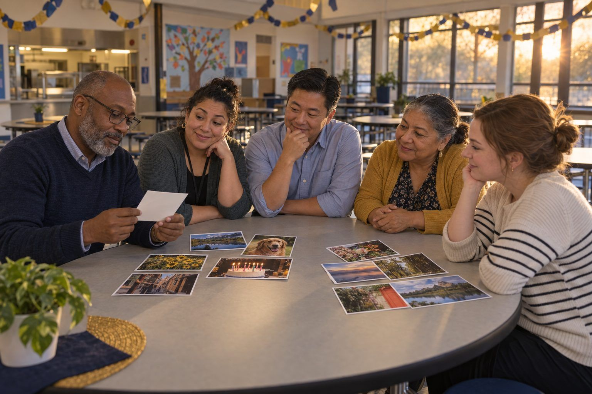

Aprendizaje profesional · Líderes, Personal, Bibliotecarios · 90 minutos
Cómo diseñar una noche familiar de IA y ciudadanía digital
Los equipos de cada campus diseñan un evento familiar en el que padres e hijos prueban cosas juntos, verifican lo que les dice la IA y se van a casa con conversaciones para tener, no solo con reglas que seguir.
Las familias oyen hablar de IA, deepfakes (ultrafalsos) y tiempo de pantalla por todas partes, a menudo en titulares alarmantes. Una noche familiar puede reemplazar el miedo con práctica, si se diseña para la participación y no como una presentación de diapositivas en la cafetería. En esta sesión, los equipos de cada campus primero viven dos estaciones de muestra como lo harían las familias; luego eligen y adaptan estaciones de un menú, planifican pensando en las familias con menos probabilidades de asistir, buscan aliados en la comunidad y personalizan un material imprimible para llevar a casa que funcione incluso para las familias que nunca asisten. La medida del éxito es lo que las familias hacen en casa la semana siguiente.
En este paquete
- Hoja A: Tarjetas del menú de estaciones (tarjetas para recortar)
- Hoja B: Lienzo de planificación de la noche familiar (hoja de trabajo)
- Hoja C: Para llevar a casa: Cinco conversaciones sobre la IA y la vida en línea (lectura)
- Clave del facilitador (última página)
Indicadores ELE de TCEA
- L5.1 Sé cómo construir alianzas digitales sólidas con las familias y las organizaciones de la comunidad.
- L5.3 Conozco estrategias para aprovechar los recursos comunitarios en línea para apoyar el aprendizaje de los estudiantes.
- L4.1 Sé cómo crear un clima de aprendizaje digital positivo e inclusivo.
- AI1.2 Puedo explicar los conceptos de IA en términos sencillos a diversas partes interesadas.
Guía completa para el facilitador: mglearn.github.io/eles/es/activities/family-ai-night-design.html
Hoja A de Cómo diseñar una noche familiar de IA y ciudadanía digital
Tarjetas del menú de estaciones
Elijan tres o cuatro estaciones para su noche. En el reverso aparecen los materiales y consejos para que cada estación sea accesible.
Estación 1 · Alfabetización mediática
¿Real o generada? Las familias clasifican 10 fotos impresas en "real" y "generada por IA" y luego las voltean para verificar. Conversación: "¿Qué harían antes de compartir una foto sorprendente?". Idea clave: verifiquen quién la publicó y si fuentes confiables muestran lo mismo.
Estación 2 · Privacidad
¿Qué sabe esta app? Las familias miran una pantalla impresa de permisos de una app de juegos ficticia (ubicación, contactos, micrófono, cámara) y deciden qué permisos necesita de verdad. Luego revisan una app en su propio teléfono, si así lo desean.
Estación 3 · IA generativa
Pregúntale y luego verifica. Un miembro del personal le hace a un chatbot una pregunta sobre su ciudad o su escuela, proyectada en pantalla. Las familias encierran en un círculo en una copia impresa todo lo que podría estar mal y luego lo comparan con los datos reales. Idea clave: los chatbots predicen palabras probables; pueden sonar seguros y aun así equivocarse.
Estación 4 · Tareas e IA
¿Ayudante o escritor fantasma? Las familias clasifican tarjetas que describen formas en que un estudiante podría usar IA en sus tareas (generar ideas, revisar la ortografía, escribir todo el ensayo, explicar un paso de matemáticas) en "ayuda a aprender", "depende del maestro" y "reemplaza el aprendizaje".
Estación 5 · Equilibrio
Nuestro acuerdo familiar sobre tecnología. Las familias redactan juntas un acuerdo breve: dónde duermen los dispositivos por la noche, horarios sin dispositivos y qué hacer si algo en línea no se siente bien. Los padres también se comprometen a seguir reglas.
Estación 6 · Seguridad
¿Este mensaje es real? Las familias miran mensajes de texto y correos electrónicos impresos (una falsa entrega de paquete, una falsa alerta de la escuela, un recordatorio real de la escuela) y deciden en cuáles confiar. Idea clave: verifiquen por el canal oficial antes de hacer clic.
Estación 7 · Feeds
¿Por qué vi eso? Los estudiantes muestran a su familia cómo un feed de videos elige qué mostrar después, con un juego de cartas en el que cada "me gusta" cambia la siguiente carta. Las familias conversan sobre qué premian los feeds.
Estación 8 · Recursos de la comunidad
Ayuda más allá de esta noche. Una mesa atendida por aliados de la comunidad: los programas gratuitos de dispositivos e internet de la biblioteca pública, clases de computación para adultos, información sobre internet de bajo costo y el enlace de la escuela con las familias.
Hoja B de Cómo diseñar una noche familiar de IA y ciudadanía digital
Lienzo de planificación de la noche familiar
Planifiquen pensando en las familias con menos probabilidades de venir, no solo en las que siempre vienen.
Nuestra meta: ¿qué deberían hacer diferente las familias la semana después de este evento?
Preguntas de las familias de la pared que responderá nuestro evento:
Nuestras estaciones (3–4), qué hacen juntos las familias y los niños en cada una y quién la dirige:
Quién podría quedar fuera y cómo lo alcanzaremos (horario, lugar, cuidado de niños, comida, transporte, idiomas, accesibilidad, participación sin asistir):
Aliados de la comunidad y recursos en línea con los que conectaremos a las familias:
Cómo se enterarán las familias (canales, idiomas, quién las invita personalmente):
Cómo sabremos lo que hicieron las familias después (evidencia más allá de la asistencia):
Primer aliado con el que nos comunicaremos, quién llamará y para cuándo:
Hoja C de Cómo diseñar una noche familiar de IA y ciudadanía digital
Para llevar a casa: Cinco conversaciones sobre la IA y la vida en línea
Una muestra para las familias. Agreguen la información de contacto de su escuela, los recursos locales y las traducciones antes de enviarla a casa.
1No necesita ser experto en tecnología para ayudar a su hijo o hija a tomar buenas decisiones en línea. Lo más poderoso que puede hacer es conversar. Aquí tiene cinco conversaciones para probar esta semana, durante la cena, en el carro o antes de dormir. Cada una empieza con una pregunta que usted puede hacer, y ninguna tiene una sola respuesta correcta.
21. "¿Cómo crees que un chatbot se inventa sus respuestas?" Los chatbots de IA han leído enormes cantidades de texto y aprendieron qué palabras suelen venir después. Cuando se les hace una pregunta, predicen una respuesta que suena probable. Por eso pueden sonar muy seguros y aun así equivocarse. Intenten preguntarle juntos a uno sobre algo que ustedes conocen bien, como el lugar de origen de su familia, y vean en qué acierta y en qué se equivoca.
32. "¿Cuándo está bien usar IA para la tarea?" Cada maestro puede tener reglas distintas para cada tarea. Pregúntele a su hijo o hija qué dicen sus maestros. Una buena regla general: usar la IA para entender algo o para obtener ideas puede ayudar a aprender; usarla para que piense por uno normalmente no ayuda. Si su hijo o hija usó IA, debería poder explicar qué preguntó y qué cambió.
43. "¿Cómo podemos saber si una foto o un video es real?" Hoy en día, las imágenes, los videos y hasta las voces se pueden crear o alterar con IA, y pueden verse y sonar muy reales. Antes de creer o compartir algo sorprendente, deténganse y verifiquen: ¿Quién lo publicó primero? ¿Las fuentes de noticias confiables o las cuentas oficiales dicen lo mismo? Si no pueden saberlo, no lo compartan.
54. "¿Qué sabe esta app sobre ti?" Muchas apps recopilan información como la ubicación, los contactos, las fotos y lo que uno escribe. Revisen juntos la configuración de una app que use su hijo o hija. Pregunten: ¿Necesita esto? ¿Quién puede ver lo que publico? Recuérdele a su hijo o hija que nunca comparta contraseñas, su domicilio ni fotos privadas, y que nunca escriba información personal de otras personas en un chatbot.
65. "¿Qué debemos hacer si algo en línea no se siente bien?" Pónganse de acuerdo en un plan antes de que pase algo: su hijo o hija puede acudir a usted, o a otro adulto de confianza, sin miedo a perder su dispositivo. Guarden lo que pasó (una captura de pantalla) en lugar de borrarlo, no le respondan a alguien que está siendo cruel y avísenle a un adulto. También puede comunicarse con el consejero escolar de su hijo o hija.
7Prueben esto en familia: Elijan un momento sin dispositivos cada día, como las comidas o la hora antes de dormir, y un lugar donde los dispositivos duerman por la noche. Los adultos también siguen la regla.
8Dónde aprender más: Su biblioteca pública ofrece ayuda gratuita con computadoras e internet, y muchas bibliotecas prestan dispositivos y puntos de acceso a internet (hotspots). ¿Tiene preguntas sobre cómo usa la escuela de su hijo o hija la tecnología o la IA? Comuníquese con su maestro o con la oficina principal. Las noticias oficiales de la escuela siempre llegan a través del propio sitio web de la escuela, su app de mensajes y sus llamadas telefónicas.
Solo para el facilitador: Cómo diseñar una noche familiar de IA y ciudadanía digital
Clave de respuestas y notas
Hoja A: Tarjetas del menú de estaciones
- Estación 1 · Alfabetización mediática
- Materiales: 10 fotos impresas, con las respuestas en el reverso. Consejo: incluyan fotos reales que se vean extrañas y fotos generadas que se vean normales. No requiere leer, así que es ideal para familias multilingües y con niños pequeños.
- Estación 2 · Privacidad
- Materiales: pantalla de permisos impresa, un voluntario que pueda ayudar con la configuración del teléfono. Consejo: nunca pidan a las familias que entreguen sus teléfonos. Ofrezcan ayuda solo si la quieren.
- Estación 3 · IA generativa
- Materiales: proyector, chatbot aprobado, respuesta impresa, datos correctos. Consejo: el personal maneja la herramienta; las familias no necesitan cuentas. Elijan una pregunta que la herramienta probablemente responda con algunos errores.
- Estación 4 · Tareas e IA
- Materiales: 12 tarjetas de casos de uso, un tapete de clasificación y las orientaciones de su campus sobre la IA en lenguaje sencillo. Consejo: inviten a un maestro a explicar cómo las tareas les indican a los estudiantes qué está permitido.
- Estación 5 · Equilibrio
- Materiales: plantilla del acuerdo, marcadores. Consejo: preséntenlo como una decisión de la familia, no como una regla de la escuela. Las familias se llevan el acuerdo a casa.
- Estación 6 · Seguridad
- Materiales: mensajes impresos con remitentes ficticios. Consejo: incluyan un ejemplo real de cómo se comunica su escuela, para que las familias aprendan cómo se ven los mensajes auténticos.
- Estación 7 · Feeds
- Materiales: un mazo de cartas con temas de videos. Consejo: funciona mejor cuando lo dirigen estudiantes de secundaria que enseñan a los adultos.
- Estación 8 · Recursos de la comunidad
- Materiales: folletos de los aliados en los idiomas de las familias. Consejo: inviten a los aliados a traer formularios de inscripción para que las familias se vayan con un próximo paso, no solo con un folleto.